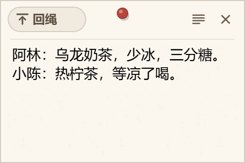

使用卡片
绳上卡片用来取回历史，悬浮卡片可以留在桌面旁。同一张卡片换了位置，双击和关闭的作用也会改变。
绳上卡片与悬浮卡片
新复制的内容先成为当前收集绳上的一张卡片。按住纸面中央拖出所有绳子行，在桌面松开，它就成为一张独立保存的悬浮卡片。


| 操作 | 绳上卡片 | 悬浮卡片 |
|---|---|---|
| 双击纸面 | 恢复内容到剪贴板、移到本绳首位并收起工作区。默认向仍可用的原目标发送粘贴。 | 按内容编辑文字、打开文件或截图、定位文件夹或文件组，或查看卡片信息。 |
| 移动 | 拖到同一绳上的空位可排序；在总览里也可拖到另一根绳。 | 在桌面拖动以调整位置。拖到绳内空位，可挂回指定位置。 |
| 单击 × | 默认直接删除。系统回收绳内始终直接删除。 | 默认移到回收绳首位，保存成功后关闭悬浮窗口。 |
绳上卡片可拖两侧、底边或底角调整大小，顶边固定在木夹下；悬浮卡片的四边、四角都能拖。缩放范围是原尺寸的 75%–200%（悬浮文字卡片默认 240 × 160 DIP）。松手保存，拖动中按 Esc 取消。回绳或重启后保留所选大小。
预览截图、打开文件
截图：将指针停在截图纸面中央约半秒，可看到全图；移开指针即可收起。在全局设置 → 卡片 → 截图悬停全图预览中可以关闭这一行为。
文件：在资源管理器中复制图片文件时，卡片保存的是对原文件的引用。双击悬浮文件卡片，会用其默认应用打开原文件；若原文件已移动或删除，查看卡片信息可核对保存的路径。
文件夹和文件组：双击悬浮卡片会在资源管理器中定位相应项目。文件组跨多个文件夹时，先选择要查看的文件夹。其他可保存的内容可以通过卡片信息查看。
读懂卡片上的图标和预览
- 纸面右下角的小圆点
- 橙点表示部分格式未保存，红点表示内容损坏或不可用。右键选“卡片信息…”可查看具体格式。在宽度至少 120 DIP 的普通绳上纸卡上悬停，底部可显示已保存的格式；编辑和查找匹配时不显示这条提示。
- 链接、图文和富文本
- 不含空格、制表符或换行，且以
http://、https://、www.或ftp://开头的文字，最多 2,048 个 UTF-16 单元时可显示为链接。普通文字带有图片预览时，图在上、文字在下。只有 HTML 或 RTF 而没有纯文本的卡片仍可取回，但右键菜单没有“编辑文字…”、字号或配色。 - 图片上有提示，却没有弹出全图
- 图片文件卡片通常显示文字提示：在图片上停留约 0.42 秒，可查看来源或路径、格式及预览状态。启用全图预览的截图则优先在约半秒后显示图像。截图原图每边不得超过 8,192 像素，总计最多 8,388,608 像素；解码等待超过 2 秒就不显示。预览按比例缩小以适应屏幕：不超过 960 × 720 DIP、可用屏幕宽高的 80%、每边 2,048 像素及总计 2,097,152 像素。
- 图片太小，难以点中纸面
- 自适应图片的短边不足 12 DIP 时，可直接双击边缘或角点，作用与双击纸面相同。按住 Ctrl 从边缘拖动则执行当前视图的复制手势，不会缩放。
把文件组拆成独立卡片
右键单击文件组，选展开文件组。默认保留原组，另为每个成员创建一张卡片。若只想留下单独的卡片，先关闭全局设置 → 卡片 → 展开后保留原文件组。
绳上文件组在原绳展开。若要挤掉绳尾卡片，先核对数量再确认；若无法容纳展开的成员，按提示提高容量后重试。悬浮文件组会变成平铺在桌面上的独立悬浮卡片。展开不会拆分或移动磁盘上的文件。
编辑文字或新建快速笔记
双击悬浮文字卡片即可输入。要编辑绳上的文字，右键单击卡片并选择编辑文字…。按 Enter 换行，Ctrl+S 保存，Esc 放弃本次修改。保存失败时草稿会保留，可在原处重试。
想从空白纸面开始，按全局快捷键 Ctrl+Shift+Space 新建悬浮快速笔记。即使取消第一次编辑，这张空白卡片也会留在桌面。
把指针停在可编辑的文字卡片上，就会出现铅笔。绳上卡片的铅笔在纸面上方、木夹右端；悬浮卡片的铅笔在工具栏 × 的左侧。点铅笔即可编辑。编辑框内用滚轮浏览文字；按 Tab 或 Shift+Tab 在文字框、保存（✓）和取消（×）之间移动，按 Enter 执行选中的按钮。每次编辑最多 4,194,303 个 UTF-16 单元。
看到“将保存为纯文本”时，修改并保存会用纯文本替换原来的 HTML 或 RTF 格式；取消或保持原文不变可保留富格式。收起正在编辑绳上卡片的工作区时，ClipRope 会先尝试保存；失败时工作区与草稿会保留。
使用输入法时，若保存提示“请先完成输入”，先确认正在输入的字，再按 Ctrl+S。关闭编辑窗口也会尝试保存；想放弃修改请按 Esc。若卡片不透明度是 0%，预览仍保留 ×，编辑时纸面会暂时变为不透明，便于看清文字。
把悬浮卡片挂回绳子
单击悬浮卡片左上角的回绳，它就会挂到点击时的当前收集绳首位。工作区收起时也可回绳。想指定另一根绳或插入位置，先打开总览，再把纸面拖到目标绳的空位。
悬浮卡片可以跨重启保留，悬浮期间不占用任何绳子的容量。挂回已满的绳子时，目标绳会移除绳尾卡片。
想在桌面保留原卡，同时把副本挂上绳？先打开总览，再按住 Ctrl 拖到目标绳。
悬浮窗口始终置顶，不受“工作区置顶”设置影响，也不能用 Alt+F4 关闭。要移走它，请用卡片上的 × 或“回绳”。宽度不足 200 DIP 时，工具栏不显示图钉，“回绳”只显示箭头，作用不变。
从回收绳（ReBin）找回卡片
- 默认设置下，悬浮卡片的 × 会把它移入回收绳（ReBin）的首位。
- 右键单击绳线或木质名牌，选择显示／隐藏 ReBin。显示后，回收绳成为当前收集绳。
- 打开总览，把要取回的卡片拖到目标绳上的空位。回收绳没有容量上限；在回收绳上单击 × 会立即删除这张卡片。
ReBin 收集期间，新复制的内容和用“回绳”送回的悬浮卡片都会进入这里。在 ReBin 的单绳视图中，按 Tab、按住 Ctrl 滚动滚轮，或在绳子菜单选“上一条绳子 / 下一条绳子”，都会隐藏 ReBin，恢复原来的收集绳。从总览回到其他绳子的单绳视图也会隐藏 ReBin。重启后它默认隐藏，里面的卡片仍会保存。